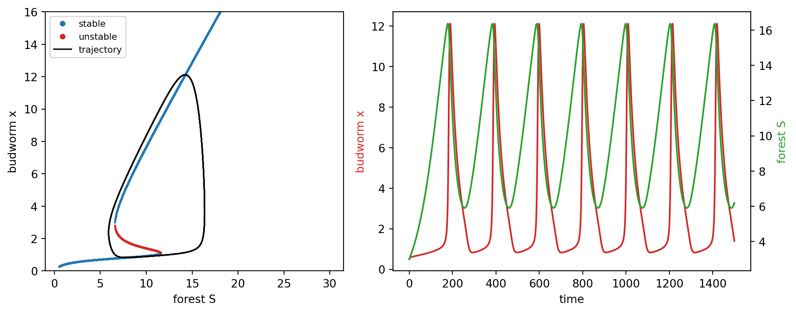
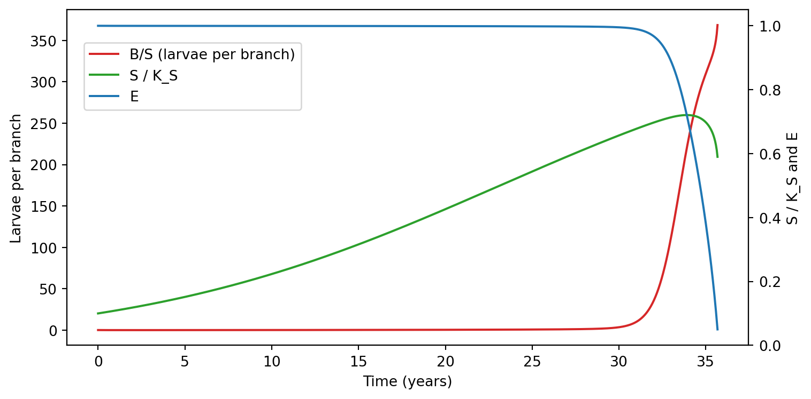

Budworm and Forest: Fast and Slow
Module 1: Low-Dimensional Dynamics
With the forest fixed, an outbreak never ends. Ludwig, Jones and Holling let the forest change on its own, slower time scale and obtained the outbreak and collapse cycle from three differential equations (Ludwig et al. 1978). This page summarizes their model. All equations and parameter values come from that paper.
Time scales
Ludwig et al. estimate that the budworm density can change several hundredfold in a few years, so its characteristic time is of the order of months. Trees need 7 to 10 years to replace their foliage and live 100 to 150 years (Ludwig et al. 1978, 316). The budworm is the fast variable; the forest is slow.
From a parameter to a variable: a two-variable slow-fast model
The budworm equation of The Spruce Budworm Model contains the parameter \(k\), which measures the foliage available to the insect. There the forest is an external input that the modeller turns up and down. Ecologically this is not possible: forest condition is not independent of the budworm population, because feeding removes foliage and the forest regrows. The one-dimensional model is better read as the fast subsystem of a larger system in which \(k\) becomes a slowly changing variable \(S\).
Write \(S(t)\) for the available foliage in the units of \(k\). The budworm density \(x\) and the forest \(S\) then obey
\[ \begin{aligned} \frac{dx}{d\tau} &= r x\left(1 - \frac{x}{S}\right) - \frac{x^2}{1 + x^2},\\ \frac{dS}{d\tau} &= \varepsilon\,\bigl[\,G(S) - H(x, S)\,\bigr], \qquad 0 < \varepsilon \ll 1 . \end{aligned} \tag{1}\]
The small number \(\varepsilon\) says that the forest changes much more slowly than the insect. \(G(S)\) is forest regrowth without budworms and \(H(x, S)\) is the foliage lost to feeding. The page does not fix the form of \(H\), because the assumptions about how insects damage trees are ecological choices. Four are reasonable:
| Defoliation \(H(x, S)\) | Assumption | Comment |
|---|---|---|
| \(a\,x\) | Each larva eats at a constant rate. | Simplest. Needs bounded forest growth so that \(S\) stays positive. |
| \(a\,x\,S\) | Feeding is proportional to the foliage present. | Defoliation vanishes as \(S \to 0\) and the forest feeds back strongly on the insect. |
| \(a\,S\,\dfrac{x}{1 + x}\) | Feeding saturates at high larval density. | Crowding or limited feeding time, as in many consumer-resource models. |
| \(a\,S\,\dfrac{x^2}{1 + x^2}\) | Holling type III, like the predation term. | Little defoliation at low density (refuge), strong during an outbreak. |
The geometry: hysteresis becomes a cycle
For fixed \(S\), the equilibria of the fast equation form the S-shaped curve of the hysteresis diagram: a lower branch (refuge), an upper branch (outbreak) and an unstable middle branch. This curve is called the critical manifold. Because \(\varepsilon\) is small, \(x\) relaxes quickly to a stable branch and then follows it while \(S\) drifts slowly. When \(S\) reaches a fold, the branch the system sits on disappears and \(x\) jumps to the other branch. The hysteresis loop of the one-dimensional model has become a relaxation oscillation in time, a mechanism you will meet again in Relaxation Oscillations.
Figure 1 shows this for the simplest choice, \(G(S) = S\,(1 - S/S_{\max})\) and \(H = a\,x\). The parameter values are chosen for the demonstration and are not fitted to data: \(r = 0.55\), \(\varepsilon = 0.02\), \(S_{\max} = 30\), \(a = 2\).
Read the cycle as an endogenous outbreak, one that needs no external forcing:
- The forest recovers slowly and \(S\) increases while the budworm stays at the refuge level.
- \(S\) crosses the fold at which the refuge disappears.
- The budworm jumps to the outbreak level.
- Defoliation \(H\) now exceeds regrowth and \(S\) falls.
- \(S\) drops below the fold at which the outbreak branch disappears and the population collapses.
- The forest recovers and the cycle repeats.
The oscillation is asymmetric, with a fast rise and a slow recovery, which is the geometry of a relaxation oscillation. The geometry of the original bifurcation diagram is unchanged; what changes is its interpretation, because hysteresis is now part of the dynamics instead of a property of a parameter sweep.
NoteThe form of \(H\) matters for the outcome, not for the geometry
All four defoliation forms share the same critical manifold, but a cycle needs two things: the forest must be able to grow past the fold where the refuge disappears, and feeding during an outbreak must push \(S\) below the fold where the outbreak disappears. If feeding is too weak the system settles to a steady state, and if it is too strong the forest never grows enough to reach the first fold. With \(r = 0.55\), \(\varepsilon = 0.02\) and \(G = S(1 - S/30)\), we integrated the model from \(x = 0.5\), \(S = 3\) and found:
| \(H\) | \(a\) with cycles | \(a\) without cycles (settles to a steady state) |
|---|---|---|
| \(a\,x\) | 2, 3 (period about 205) | 1.5 |
| \(a\,x\,S\) | 0.3, 0.5 (period about 200 to 280) | 0.15, 0.2 |
| \(a\,S\,x^2/(1 + x^2)\) | 1.0 (period about 390) | 0.8, 1.5, 2, 3 |
| \(a\,S\,x/(1 + x)\) | none of the values tried (1 to 4) | 1, 1.5, 2, 3, 4 |
Times are in the dimensionless units of Equation 1. These runs sample only a few values of \(a\) with the other parameters fixed, so they show that the outcome depends on \(H\) and \(a\) but do not map the boundaries between the two behaviours.
The three-variable model of Ludwig et al. below is a more detailed version of this idea, with a separate variable for the condition of the trees.
The three-variable model
The state is the budworm density \(B\) (larvae per acre), the total branch surface area \(S\) (branches per acre) and an “energy reserve” \(E\) that measures the condition of the trees, with maximum \(K_E = 1\):
\[ \begin{aligned} \frac{dB}{dt} &= r_B B\left(1 - \frac{B}{K' S}\right) - \beta\,\frac{B^2}{(\alpha' S)^2 + B^2},\\ \frac{dS}{dt} &= r_S S\left(1 - \frac{S}{K_S}\,\frac{K_E}{E}\right),\\ \frac{dE}{dt} &= r_E E\left(1 - \frac{E}{K_E}\right) - P\,\frac{B}{S}. \end{aligned} \tag{2}\]
This is eqns (3), (10) and (11) of Ludwig et al. (1978) with the carrying capacity \(K_B = K'S\) and the half-saturation density \(\alpha = \alpha' S\) both proportional to branch area (eqns 13 and 14). The budworm equation is the model of The Spruce Budworm Model; its dimensionless groups become
\[ R = \frac{\alpha' r_B}{\beta}\,S, \qquad Q = \frac{K'}{\alpha'} , \]
so \(Q\) is fixed and \(R\) grows with the forest (Ludwig et al. 1978, eqn 15).
The outbreak cycle
Ludwig et al. describe the cycle qualitatively (Ludwig et al. 1978, 322–23):
- A young forest has small \(S\), so \(R\) is small and the budworm stays at the refuge level, controlled by predators.
- As the forest grows, \(R\) increases until it crosses the upper fold of the \((Q, R)\) diagram. The refuge disappears and the budworm jumps to the outbreak level.
- During the outbreak, consumption \(PB/S\) exceeds the recovery of \(E\) when \(M = PK'/(r_E K_E) > 1/4\), so \(E\) and then \(S\) decline.
- The smaller forest lowers \(R\) below the lower fold and the outbreak collapses.
Figure 2 integrates Equation 2 with the Level III parameter values of the paper (\(r_B = 1.52\), \(K' = 335\), \(\beta = 43\,200\), \(\alpha' = 1.11\), \(r_S = 0.095\), \(K_S = 25\,440\), \(r_E = 0.92\), \(P = 0.00195\)), which give \(Q \approx 302\) and \(M \approx 0.71\) (Ludwig et al. 1978, Table 1 and p. 328).

The budworm stays low for about three decades while the forest grows, then rises by more than two orders of magnitude within a few years, and the energy reserve collapses. Ludwig et al. state that with realistic parameter values the outbreak leads to a collapse of the forest, and show one outbreak cycle in their Fig. 5 (Ludwig et al. 1978, 324 and 328). The exact timing in Figure 2 depends on the initial state chosen here.
Limitations
- With these parameters \(E\) becomes negative after the outbreak. Ludwig et al. note that the model then describes one cohort of trees and must be restarted with a young forest, or modified for small \(E\) (their eqns 20 to 22) (Ludwig et al. 1978, 324).
- The model is continuous in time, while the insect has one generation per year.
- Birds, parasites and weather are summarized in two predation parameters.
Management
Ludwig et al. point out that if budworm densities are partially controlled, for example by spraying, the forest may stay at an equilibrium with high budworm, foliage and branch area. They link this to the “perpetual outbreak” observed in New Brunswick after insecticide spraying (Ludwig et al. 1978, 322–23). Keeping the budworm below the outbreak level also keeps the forest in the state where the next outbreak is possible.
Evidence from real outbreaks
Slow-fast models predict long quiet phases punctuated by abrupt outbreaks and collapses. Forest insects are one of the few cases where long records exist to compare with this prediction.
Larch budmoth in the Alps. The larch budmoth (Zeiraphera diniana) periodically defoliates larch, which leaves a growth reduction in the tree rings. From 47 513 wood-density measurements, Esper et al. reconstructed outbreaks over 1173 years and found remarkably regular peaks, on average every 9.3 years (Esper et al. 2007). Büntgen et al. later compiled more than 5000 tree-ring series from the Alps and the Tatra Mountains and found cyclic outbreaks recurring about every 8 to 9 years at the site level between AD 1700 and 2000 (Büntgen et al. 2009). Both studies also report a change in recent decades. The regular peaks stopped after 1981 in the first reconstruction, and the second finds that synchronized Alpine-wide defoliation has ceased even though local cycles persisted. Esper et al. relate this to exceptional regional warmth, so the regularity of the cycle is not guaranteed to continue.
Spruce budworm. Ludwig et al. calibrate their model to an outbreak period of about 40 years (Ludwig et al. 1978). Unlike the larch budmoth, outbreaks of the spruce budworm are not strictly periodic, with variable amplitude and spacing. Noise, spatial heterogeneity and climate are natural explanations for this variability, and a slow-fast mechanism does not require exact periodicity.
Other forest Lepidoptera. Population cycles are common in forest moths, including the forest tent caterpillar and the gypsy moth, and the review of Myers and Cory covers what is known about their mechanisms (Myers and Cory 2013).
WarningThe mechanism is still debated
The agreement between the cycle shape and the data does not prove that a slow-fast host-resource mechanism causes the cycles. Myers and Cory report that delayed density-dependent parasitism and reduced fecundity at peak density are common influences on forest Lepidoptera, that induced plant defences give inconsistent results, and that the hypothesis that sunspots explain cycles is rejected (Myers and Cory 2013). The model on this page is one candidate mechanism, and it is useful because it is simple enough to analyse completely.
NoteExercise
Using the Level III values, compute \(R\) for a mature forest (\(S = K_S\)). Is it above the value \(1/2\) needed for outbreaks when \(Q\) is large?
TipSolution
\(R = \alpha' r_B K_S / \beta = 1.11 \times 1.52 \times 25\,440 / 43\,200 \approx 0.99 > 1/2\). A mature forest is past the fold, so it cannot hold the budworm at the refuge level. The outbreak starts once \(S\) exceeds roughly half of \(K_S\).
Next
The next topic is epidemics, starting with Compartmental Models.
References
Büntgen, Ulf, David Frank, Andrew Liebhold, et al. 2009. “Three Centuries of Insect Outbreaks Across the European Alps.” New Phytologist 182 (4): 929–41. https://doi.org/10.1111/j.1469-8137.2009.02825.x.
Esper, Jan, Ulf Büntgen, David C. Frank, Daniel Nievergelt, and Andrew Liebhold. 2007. “1200 Years of Regular Outbreaks in Alpine Insects.” Proceedings of the Royal Society B: Biological Sciences 274 (1610): 671–79. https://doi.org/10.1098/rspb.2006.0191.
Ludwig, D., D. D. Jones, and C. S. Holling. 1978. “Qualitative Analysis of Insect Outbreak Systems: The Spruce Budworm and Forest.” Journal of Animal Ecology 47 (1): 315–32. https://doi.org/10.2307/3939.
Myers, Judith H., and Jenny S. Cory. 2013. “Population Cycles in Forest Lepidoptera Revisited.” Annual Review of Ecology, Evolution, and Systematics 44: 565–92. https://doi.org/10.1146/annurev-ecolsys-110512-135858.